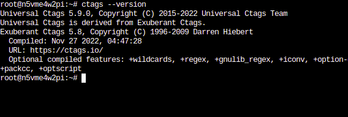
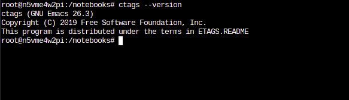
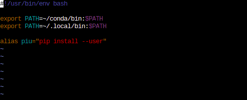
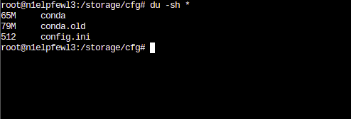
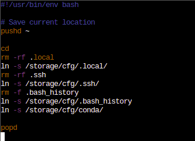
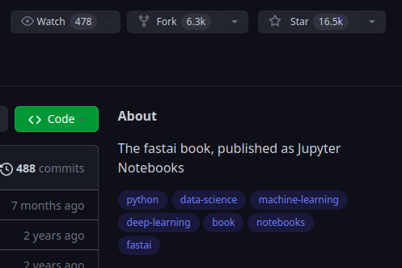

from fastai.vision.all import *Live coding 6
Live coding 6
In this blog, I will cover how to setup mamba and bash_history in Paperspace. We also will go over a bit of fastbook and some terminal commands.
This blog is based on Live coding 6 Youtube video. There’s been some changes to Paperspace since the video is recorded. For instance, mamba is available now, so it’s easier to setup. Let’s dive in.
Mamba
So, we want to intall universal-ctags, but it’s not available on pip because it’s not really a python thing. We can install it with a package manager, but it won’t be available after we restart Paperspace instance. Are we out of luck? No! Thankfully, we can use mamba! We can use -p to specify where to install universal-ctags, and we can make it persistent.
These are the steps.
- Open up terminal in Paperspace.
cd: Change directory to home directory (/root/)mkdir conda: We create conda directory here so that we can install packages in this directory.mamba install -p ~/conda universal-ctags: We are usingmambawith-p ~/conda. With-p, we specify where to install the package and~/condais same as/root/condain this case.~is short for home directory, which is/root/.- Follow the prompt, and we have ctags installed.

Next thing is to add this to our PATH environment variable. We can check our environment variable with echo command. With echo $PATH, we can take a look. Then, type export PATH=~/conda/bin:$PATH. This updates our shell’s PATH environment variable to include ~/conda/bin. If you are curious, take a look at what’s inside of conda directory.
So, let’s try if ctags is installed correctly. Try ctags --version.
This is what it should look like:

If your looks something like this, it’s not installed correctly. This is from Emacs:

If you forgot how to use ctags, check out Live coding 5.
Cool. This is working for now, but ctags will not be available if we restart our instance. To make this available persistently, we have to do some work. Let’s take care of our environment variable first. Rather than typing export PATH=~/conda/bin:$PATH every single time we start our instance, we can create .bash.local file inside of /storage/. This file will be run when the instance starts. This is what mine look like:

/storage/.bash.local fileFirst line is for conda and second line is for pip. Last line creates an alias so that I can type piu instead of pip install --user.
Warning
Space is not allowed between = and words. This will not work. You have to type similar to mine.
Let’s move on to the next steps:
mv conda/ /storage/cfg/: Move the conda directory into our permanent storage location.ln -s /storage/cfg/conda: Create a symlink from the moved directory to here.ctags --version: Test it again.- Now, add
ln -s /storage/cfg/condato/storage/pre-run.shin order to make conda packages available even after restarting the instance.
Now we are set with conda packages. But how big is the conda directory? How much disk space does it use? Because we have limited space, it’s good to check this with du -sh command. This command roughly means disk usage (du) with summary (s) and human readable (h) options. Change directory to conda directory and try it. We can also do du -sh * to see list each directory with sizes.

du -sh *Bash history
Whenever we type command on terminal, it is saved. We can press up arrow and down arrow to refer back to our command history. We can type history to look at them. Basically, all the history is stored at ~/.bash_history file. Take a look.
To make our Paperspace instance feel more user friendly, we can save our bash command history so that we can refer back to our history before we closed the instance.
cd: Move to home directory.mv .bash_history /storage/cfg: Move the .bash_history file into/storage/cfg/directory.ln -s /storage/cfg/.bash_history: Create a symlink.
Now we just have to update our pre-run.sh file. Here’s what mine looks like so far. Same thing here like we did before with .local/. We delete .bash_history if system generated one at this point. Then make the symlink.

Now, if you want the history to work, make sure to close the terminal with Ctrl-d before shutting down the instance. I noticed that history does not get saved if I just shut down the instance.
Fastbook setup
Next thing we will cover is setting up fastbook. We will add this into our /notebooks/ so that we can have this permanently. Easy way to do it is simply go /notebooks/ directory and type git clone https://github.com/fastai/fastbook.git. However, we can fork this repo first. On the fastbook github page, click fork to get a copy of the repo. It is located on the top right side of the page.

Then use git clone to clone it inside of Paperspace. In order to use git to actually commit to GitHub, we have to setup .gitconfig file. Type git config --global user.name "yourname" and git config --global user.email "youremail" to setup them. Now, the same thing. To make this persistent, we have to move this file to /storage/cfg and create a symlink. Here are the steps:
git config --global user.name "yourname"git config --global user.email "youremail"mv ~/.gitconfig /storage/cfg/ln -s /storage/cfg/.gitconfig
Now, our gitconfig is complete.
Let’s go over some fastbook stuff now. We will see this code block when we look at the book:
This means we are importing everything (*) from fastai/vision/all.py module. See how . changes to /? We can take a look at this file if we want to. Now, we know where to look when we encounter this stuff in our book to dig deeper.
vim command tips
In vim, we can type * on a word to move the cursor to next occurance of it. Typing Ctrl-p while typing a word can fill the rest of the word like auto completion. The word has to be used before.
Another thing we find a lot is path. It is made with Pathlib from python standard library.
path = untar_data(URLs.MNIST_SAMPLE)
pathPath('/home/kappa/.fastai/data/mnist_sample')It is upgraded with fastai, so we can use ls method to look at files and directories within this path.
path.ls()(#3) [Path('/home/kappa/.fastai/data/mnist_sample/labels.csv'),Path('/home/kappa/.fastai/data/mnist_sample/train'),Path('/home/kappa/.fastai/data/mnist_sample/valid')]Another useful feature from path is Path.BASE_PATH. This can simplify our path by setting the base path.
Path.BASE_PATH = pathpath.ls()(#3) [Path('labels.csv'),Path('train'),Path('valid')]See how simple and readable it is now?
Conclusion
Now our environment is setup so that we can read fastbook and commit changes to our forked repo. Committing to a forked repo is optional because paperspace will keep the notebooks. However, I like backing up my work at GitHub just in case I want to work on my local computer.
If you want to dig deeper, you can watch the video this blog is based on.